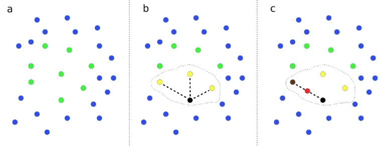

Creating synthetic SAMUeL data data with SMOTE
Contents
Creating synthetic SAMUeL data data with SMOTE¶
Description of SMOTE¶
SMOTE stands for Synthetic Minority Oversampling Technique [1]. SMOTE is more commonly used to create additional data to enhance modelling fitting, especially when one or more classes have low prevalence in the data set. Hence the description of oversampling.
SMOTE works by finding near-neighbor points in the original data, and creating new data points from interpolating between two near-neighbor points.
Here we remove the real data used to create the synthetic data, leaving only the synthetic data. After generating synthetic data we remove any data points that, by chance, are identical to original real data points, and also remove 10% of points that are closest to the original data points. We measure ‘closeness’ by the Cartesian distance between standardised data values.

Demonstration of SMOTE method. (a) Data points with two features (shown on x and y axes) are represented. Points are colour-coded by class label. (b) A data point from a class is picked at random, shown by the black point, and then the closest neighbours of the same class are identified, as shown by yellow points. Here we show 3 closest neighbours, but the default in the SMOTE Imbalanced-Learn library is 6. One of those near-neighbour points is selected at random (shown by the second black point). A new data point, shown in red, is created at a random distance between the two selected data points.
Handling integer, binary, and categorical data¶
The standard SMOTE method generates floating point non-integer) values between data points. There are alternative ways of handing integer, binary, and categorical data using the SMOTE method. Here the methods we use are:
Integer values: Round the resulting synthetic data point value to the closest integer.
Binary: Code the value as 0 or 1, and round the resulting synthetic data point value to the closest integer (0 or 1).
Categorical: One-hot encode the categorical feature. Generate the synthetic data for each category value. Identify the category with the highest value and set to 1 while setting all others to 0.
Implementation with IMBLEARN¶
Here use the implementation in the IMBLEARN IMBALANCED-LEARN [2]
[1] Chawla, N.V., Bowyer, K.W., Hall, L.O., Kegelmeyer, W.P. “SMOTE: Synthetic minority over-sampling technique,” Journal of Artificial Intelligence Research, vol. 16, pp. 321-357, 2002.
[2] Lemaitre, G., Nogueira, F. and Aridas, C. (2016), Imbalanced-learn: A Python Toolbox to Tackle the Curse of Imbalanced Datasets in Machine Learning. arXiv:1609.06570 (https://pypi.org/project/imbalanced-learn/, pip install imbalanced-learn).
Load packages¶
import matplotlib.pyplot as plt
import numpy as np
import pandas as pd
# Import machine learning methods
from sklearn.preprocessing import StandardScaler
from sklearn.neighbors import NearestNeighbors
# Import package for SMOTE
from imblearn.over_sampling import SMOTE
# Turn warnings off to keep notebook clean
import warnings
warnings.filterwarnings("ignore")
Set minimum allowable distance from synthetic to closest real data¶
min_epsilon = 0.5
Load data¶
Synthetic data is based on the training data of a train/test split so performance can then be tested against a test set not used to make synthetic data.
data_loc = './../data/sam_1/kfold_5fold/'
train_data = pd.read_csv(data_loc + 'train_0.csv')
Functions¶
Function to standardise data¶
def standardise_data(X_train, X_test):
"""
Converts all data to a similar scale.
Standardisation subtracts mean and divides by standard deviation
for each feature.
Standardised data will have a mena of 0 and standard deviation of 1.
The training data mean and standard deviation is used to standardise both
training and test set data.
"""
# Initialise a new scaling object for normalising input data
sc = StandardScaler()
# Set up the scaler just on the training set
sc.fit(X_train)
# Apply the scaler to the training and test sets
train_std=sc.transform(X_train)
test_std=sc.transform(X_test)
return train_std, test_std
Function to calculate accuracy measures¶
Function to create raw synthetic data¶
Data generated are floats; this will need processing for integer, binary, and categorical data.
def make_synthetic_data_smote(X, y, number_of_samples=[1000,1000]):
"""
Synthetic data generation for two classes.
Inputs
------
original_data: X, y numpy arrays (y should have label 0 and 1)
number_of_samples: number of samples to generate (list for y=0, y=1)
Returns
-------
X_synthetic: NumPy array
y_synthetic: NumPy array
"""
# Count instances in each class
count_label_0 = np.sum(y==0)
count_label_1 = np.sum(y==1)
# SMOTE requires final class counts; add current counts to required counts
n_class_0 = number_of_samples[0] + count_label_0
n_class_1 = number_of_samples[1] + count_label_1
# Get SMOTE points
X_resampled, y_resampled = SMOTE(
sampling_strategy = {0:n_class_0, 1:n_class_1}, n_jobs=-1
).fit_resample(X, y)
# Get just the additional (synethetic) data points
X_synthetic = X_resampled[len(X):]
y_synthetic = y_resampled[len(y):]
return X_synthetic, y_synthetic
Function to process one-hot categorical data¶
def make_one_hot(x):
"""
Takes a list/array/series and returns 1 for highest value and 0 for all
others
"""
# Get argmax
highest = np.argmax(x)
# Set all values to zero
x *= 0.0
# Set argmax to one
x[highest] = 1.0
return x
Function to add nearest real data neighbour to synthetic data¶
Find nearest neighbour in the real data set (based on Cartesian distance of standardised data).Find nearest neighbour in the real data set (based on Cartesian distance of standardised data).
def find_distance_to_closest_real_data(X_actual, X_synthetic):
"""
Find nearest neighbour in the real data set (based on Cartesian distance of
standardised data).
"""
# Standardise data (based on real training data)
X_actual_std, X_synth_std = standardise_data(X_actual, X_synthetic)
# Use ScitLearn neighbors.NearestNeighbors to get nearest neighbour
nn = NearestNeighbors(n_neighbors=1, algorithm='auto').fit(X_actual_std)
dists, idxs = nn.kneighbors(X_synth_std)
# Convert row idxs to index in original index in X_actual
real_ids = list(X_actual.iloc[idxs.flatten()].index)
# Store in dictionary
nearest_neighbours = dict()
nearest_neighbours['distances'] = list(dists.flatten())
nearest_neighbours['ids'] = real_ids
return nearest_neighbours
Function to remove identical or nearest neighbour points.
def remove_near_neighbours(df, epsilon=0.0, frac_remove=0.0):
"""Remove identical or nearest neighbour points"""
# Remove points within defined distance
if epsilon > 0:
identical = df['nn_distance'] < epsilon
mask = identical == False
df = df[mask]
# Remove a proportion (closest neighbours)
if frac_remove > 0:
df.sort_values('nn_distance', ascending=False, inplace=True)
number_to_keep = int(len(df) * (1 - frac_remove))
df = df.head(number_to_keep)
df = df.sample(frac=1.0)
return df
Set lists of categorical (one-hot coded) and integer fields¶
# One hot column lists
col_list = [
'MoreEqual80y',
'S1Gender',
'S1Ethnicity',
'S1OnsetInHospital',
'S1OnsetTimeType',
'S1OnsetDateType',
'S1ArriveByAmbulance',
'S1AdmissionHour',
'S1AdmissionDay',
'S1AdmissionQuarter',
'S1AdmissionYear',
'CongestiveHeartFailure',
'Hypertension',
'AtrialFibrillation',
'Diabetes',
'StrokeTIA',
'AFAntiplatelet',
'AFAnticoagulent_',
'AFAnticoagulentVitK',
'AFAnticoagulentDOAC',
'AFAnticoagulentHeparin',
'S2NewAFDiagnosis',
'S2StrokeType',
'S2TIAInLastMonth']
X_col_names = list(train_data)
one_hot_cols = []
for col in col_list:
one_hot = [x for x in X_col_names if x[0:len(col)] == col]
one_hot_cols.append(one_hot)
integer_cols = [
'S2RankinBeforeStroke',
'Loc',
'LocQuestions',
'LocCommands',
'BestGaze',
'Visual',
'FacialPalsy',
'MotorArmLeft',
'MotorArmRight',
'MotorLegLeft',
'MotorLegRight',
'LimbAtaxia',
'Sensory',
'BestLanguage',
'Dysarthria',
'ExtinctionInattention',
'S2NihssArrival']
# Get min and max for integers (will be used to clip synthetic data)
integer_min_max = dict()
for col in integer_cols:
col_min = int(train_data[col].min())
col_max = int(train_data[col].max())
integer_min_max[col] = (col_min, col_max)
# Manually clip age to 30 - 100 to avoid using extremes
integer_min_max['S1AgeOnArrival'] = (30, 100)
Create synthetic data¶
Create synthetic data and process categorical (one-hot) and integer data¶
# Set up list for synthetic data for each stroke team
synthetic_dfs = []
# Loop through stroke teams
groups = train_data.groupby('StrokeTeam')
count = 0
for index, group_df in groups:
# Report progress
count += 1
print (f'\rSynthesising {count} out of {len(groups)} teams', end='')
# Split data in X and y
X = group_df.drop(['S2Thrombolysis'], axis=1)
X.drop('StrokeTeam', inplace = True, axis=1)
y = group_df['S2Thrombolysis']
X_col_names = list(X)
X = X.values
y = y.values
# Count number in each class
count_label_0 = np.sum(y == 0)
count_label_1 = np.sum(y == 1)
# Will make intial SMOTE data to be 2 x size of data to allow point removal
n_class_0 = int(2 * count_label_0)
n_class_1 = int(2 * count_label_1)
# Generate raw synthetic data
X_synthetic, y_synthetic = make_synthetic_data_smote(
X, y, [n_class_0, n_class_1])
# Reconstruct dataframe
df = pd.DataFrame(X_synthetic, columns=X_col_names)
df['S2Thrombolysis'] = y_synthetic
df['StrokeTeam'] = index
# Make one hot as necessary
for one_hot_list in one_hot_cols:
for row_index, row in df.iterrows():
x = row[one_hot_list]
x_one_hot = make_one_hot(x)
row[x_one_hot.index] = x_one_hot.values
df.loc[row_index] = row
# Round and clip integer columns
for col in integer_cols:
df[col] = df[col].round(0)
# Clip
df[col] = np.clip(
df[col], integer_min_max[col][0], integer_min_max[col][1])
# Add to list
synthetic_dfs.append(df)
# Concatenate results, shuffle and store
synthetic_data = pd.concat(synthetic_dfs)
synthetic_data = synthetic_data.sample(frac=1.0)
Synthesising 132 out of 132 teams
Add distance measure to original data¶
X_train = train_data.drop(['S2Thrombolysis'], axis=1)
# Loop through stroke teams (calculate distance to patients in same unit)
groups = X_train.groupby('StrokeTeam')
# Set up list for synthetic data for each stroke team
synthetic_dfs = []
for index, group_df in groups:
# Get training, test, and synthetic data for each k-fold
actual_train = group_df.drop(['StrokeTeam'], axis=1)
mask = synthetic_data['StrokeTeam'] == index
synthetic_X = synthetic_data[mask].drop(
['StrokeTeam', 'S2Thrombolysis'], axis=1)
synthetic_Y = synthetic_data[mask]['S2Thrombolysis']
# Get nearest neighbour distance and ID
nearest_neighbours = find_distance_to_closest_real_data(
actual_train, synthetic_X)
# Store data for unit in a dataframe
df = synthetic_data[mask]
df['nn_distance'] = nearest_neighbours['distances']
df['nn_id'] = nearest_neighbours['ids']
# Append to list of unit dataframes
synthetic_dfs.append(df)
# Concatenate results, shuffle and store
synthetic_data = pd.concat(synthetic_dfs)
synthetic_data = synthetic_data.sample(frac=1.0)
Remove points with identical points or near neighbours in real data¶
Remove points with identical points or near neighbours in real data (these are examined by unit - two identical patients may exist if they are associated with different stroke units).~
# Remove points within
restricted_data = remove_near_neighbours(synthetic_data, min_epsilon)
# Sample from synthetic data to get same size/balance as the original data
num_class_0 = np.sum(train_data['S2Thrombolysis'] == 0)
num_class_1 = np.sum(train_data['S2Thrombolysis'] == 1)
mask = restricted_data['S2Thrombolysis'] == 0
samples_available = sum(mask)
samples_without_bootstrap = min(num_class_0, samples_available)
samples_with_bootstrap = max(0, num_class_0 - samples_without_bootstrap)
synth_class_0 = pd.concat([
restricted_data[mask].sample(samples_without_bootstrap),
restricted_data[mask].sample(samples_with_bootstrap, replace=True)])
mask = restricted_data['S2Thrombolysis'] == 1
samples_available = sum(mask)
samples_without_bootstrap = min(num_class_1, samples_available)
samples_with_bootstrap = max(0, num_class_1 - samples_without_bootstrap)
synth_class_1 = pd.concat([
restricted_data[mask].sample(samples_without_bootstrap),
restricted_data[mask].sample(samples_with_bootstrap, replace=True)])
# Reconstruct into single dataframe and shuffle
synthetic_data_restricted = pd.concat([synth_class_0, synth_class_1], axis=0)
synthetic_data_restricted = synthetic_data_restricted.sample(frac=1.0)
Save synthetic data¶
# Save with same columns and order as orginal data
cols = list(train_data)
synthetic_data_restricted = synthetic_data_restricted[cols]
name = data_loc + f'test_run_0.csv'
synthetic_data_restricted.to_csv(name, index=False)
Note: Rounds of synthetic data may be repeated: ANother set of synthetic data based on this set of synthetic data.